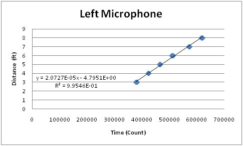
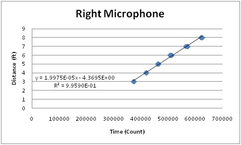
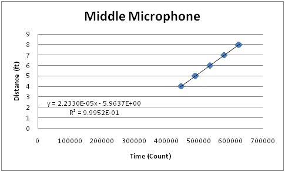
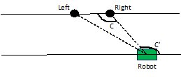
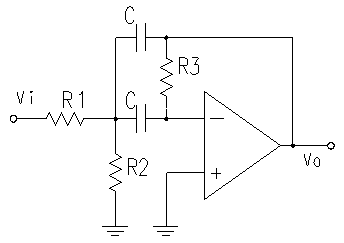
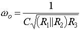
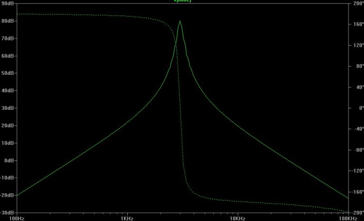
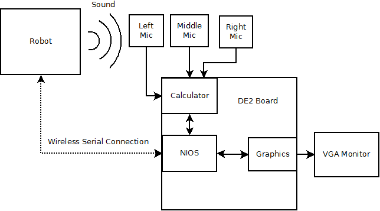

High Level Design
Source of Project Idea
One of the topics that came up repeatedly over the course of the class was sound localization. Animals (including humans) use an array of audio cues to estimate where in the environment a sound source is located. The simplest of these cues is the time delay between the sound reaching the right and left ear. Our project is based on this biological technique.
The decision to showcase this system with robotic localization came from a common problem with low cost robots. Localizing a robot can be a very difficult task and is very dependent on the environment and the landmarks available. While GPS is very good outdoors, it is expensive and has limited indoor capabilities. Cameras can be costly and doing vision processing is relatively processor intensive. While it does face several limitations, localizing with sound is very cheap in both processing and hardware costs.
Background Math
Angle and Distance Calculations
The main calculations performed in hardware included a distance translation calculation, a calculation to determine the angle from one microphone attached to the FPGA to the robot, and an x and y coordinate calculation. The main difficulty with the math performed in the hardware was achieving the accuracy necessary. Many of the values we were working with involved very small numbers. For this reason, we created a complicated fixed-point math scheme that changed often to accommodate the accuracy required for different values in the system.
The first calculation that must be performed in the system is a conversion from a time value to a distance value. In order to do this, we used a linear best fit y=mx+b.
The x-value corresponded to the time value (or counter value) that we collected by waiting for a sound sample. The y-value is a distance in feet. The slope and y-intercept were generated by collecting counter data points while moving the sound source between different distances. The graphs for these can be seen below. We had to collect different slope and y-intercept values for each of the microphones in the system because the filters attached to each of the microphones produced slightly different outputs. Therefore, each microphone had slightly different thresholds, which resulted in slightly different calculation results.
- 
- 
- 
The angle from the sound source to the robot was calculated using the cosine rule. The cosine rule is a method of calculating angles in a triangle assuming that you know the three sides of the triangle. The general form equation for the cosine rule can be seen below.

In our system, the a value corresponded to the distance between the left and right microphones (1 ft). The c value corresponds to the distance from the left microphone to the sound source (the microphones were named as if you were looking towards the board). The b value corresponds to the distance from the right microphone to the sound source. The angle calculated was the angle from the right microphone to the robot. The hardware uses these values with sin and cos tables to get the robots relative x and y position in cartesian coordinates.
The final math performed in this system was used for robot control. We basically used a general math principle regarding angles and parallel lines in order to determine how to turn the robot the least to move in the x or y direction.
From the angle calculation described above, we know the angle C. The robot is facing the microphone system in order to get this reading. By drawing a virtual line through the robot’s location, but parallel to the line passing through the left and right microphones, we now know the angle C’ based on properties of a line intersecting two parallel lines. We can use this angle to determine how to make the robot face 0 degrees, 90 degrees, or 180 degrees based on simple subtraction. Since the robot only moves in the x and y directions, this property is sufficient to obtain the information that is necessary to control the robot.
Filtering and Amplification Calculations
In order to detect sound pings from the robot the output signal from the microphone had to be greatly amplified. Pings would typically cause spikes of about 5mV which was less than the 60Hz noise. In order to amplify the signal from the pings and attenuate all other sounds we decided to use High-Q bandpass filters in series.
These filters amplify a very narrow frequency range with the center at Wo
Our microphones had the strongest response at about 3.1kHz so we chose C=1nF, R1=R2=5.1kOlm, and R3=1Molm. This gave us a wo=3.15kHz.
We put this design into a spice simulator to get the following transfer function
In actuality we could only use these calculations as a starting point. The analog circuitry was very sensitive to noise and differences in the faults in the resistor values. We ended up trying a wide array of resistor designs and values before we settled on this one. Even so the amplification we ended up was significantly different than the one predicted from the calculations.
Logical Structure
The top-level structure of our system is composed of four main subsystems. The first is the Altera DE2 board, which can be further decomposed into the Nios II and hardware subsystems. The second part is the VGA monitor, which connects to and is controlled by the DE2 board. The next part is the sound receiving circuitry and XBee module, which are both connected to the DE2 board. The final part is the robot, which is external to the FPGA system.
The Altera DE2 board component of the top-level system can be broken down further to include the hardware modules it is composed of. The most significant hardware module is the Nios II microcontroller. This system is responsible for the robot control. Interfaced to this module is a distance calculation module, which in turn is connected to a timer module. The timer module is responsible for counting the amount of time between a control signal getting sent to the robot and a pulse being heard by the sound receiving circuitry. The distance calculation module converts the time to a distance.
The Nios II microcontroller also connects to a calculator module. The calculator module calculates the angle between the two distance values it receives. It also performs a polar to Cartesian coordinate conversion. The final hardware module implemented for this project was a simple graphics card. This was designed to display squares on the VGA monitor in order to show where the robot was in relation to the FPGA. It was controlled by the Nios II processor.
TradeOffs
Many tradeoffs were made in this project between hardware and software. When we began designing the project we understood that there would be a strong FPGA hardware component, FPGA Nios II software component, and external hardware component. For this reason, we attempted to plan the best way to implement each major area of the project. Although it is possible to perform everything in the Nios II microcontroller, this would not be practical.
The timing module for determining the time to hear a signal from the sound source is one module that was considered for implementation in the Nios and in hardware. We eventually decided on a hardware approach because we could achieve greater accuracy in the hardware. The Nios II processor has a lot of overhead; therefore, it cannot be run as fast or as accurately as the hardware. Using the Nios II we would have to hope that the signals from the microphones were passed into the processor in such a fashion that signal changes could be detected as quickly as they occur (or at least with the same amount of delay each time). Since this cannot be guaranteed with a software approach, we dedicated hardware to performing the timing.
We decided to perform all intensive math processes in the FPGA hardware. This decision was made without a lot of trade off analysis. Performing math in software is very slow and costly in regard to program space; therefore, it makes sense to implement the math in hardware.
The VGA controller was implemented in hardware in order to allow the Nios II to have more time in sending control signals. The overall goal of the setup was to have the Nios II sending control signals to the robot and the hardware doing the heavy calculations and peripheral tasks. This allowed a clean, fast approach to moving the robot around the room.
We originally intended to implement the bulk of the audio filtering on the NIOS. While this would have the advantage of being easier to change, doing analog filtering does not suffer from quantization errors and helps prevent noise from overwhelming the signal during amplification.
Standards
The serial output of the DE2 board is RS232. We needed to convert this to standard TTL logic levels in order to transmit it over the XBEE. We used an MAX233 to do the level shift.
To display images the DE2 board needed to output VGA signals. The low level implementation of this standar was handled by a modification of Altera's example done by Bruce Land.
Intellectual Rights
The NIOS and related code is all owned by Altera. We only have the right to use it for testing and evaluation purposes and cannot distribute their IP.
The low level audio and video verilog was provided to us by Bruce Land. This code is a combination of parts written by him, and code provided by Altera. We would not want to redistribute this code because of its mixed origins.